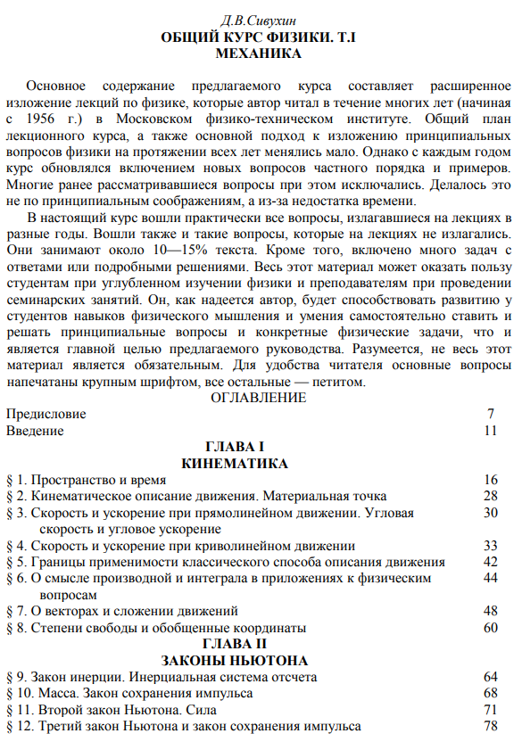
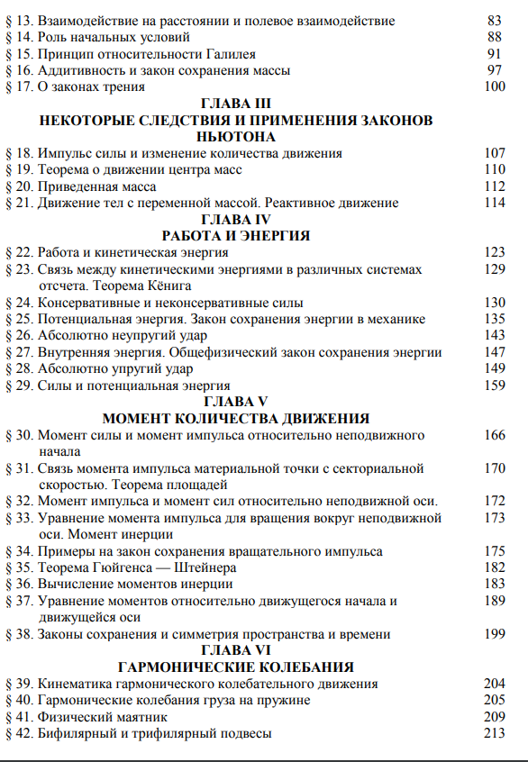

Библиотека
Научно-техническая
Общий курс физики. В 5 т. Том I. Механика.
Сивухин Д.В. | 2005
Основное содержание предлагаемого курса составляет расширенное изложение лекций по физике, которые автор читал в течение многих лет (начиная с 1956 г.) в Московском физико-техническоминституте. Общий план лекционного курса, а также основной подход к изложению принципиальных вопросов физики на протяжении всех лет менялись мало. Однако с каждым годом курс обновлялся включением новых вопросов частного порядка и примеров. Многие ранее рассматривавшиеся вопросы при этом исключались. Делалось это не по принципиальным соображениям, аиз-занедостатка времени.
В настоящий курс вошли практически все вопросы, излагавшиеся на лекциях в разные годы. Вошли также и такие вопросы, которые на лекциях не излагались. Они занимают около 10—15%текста. Кроме того, включено много задач с ответами или подробными решениями. Весь этот материал может оказать пользу студентам при углубленном изучении физики и преподавателям при проведении семинарских занятий. Он, как надеется автор, будет способствовать развитию у студентов навыков физического мышления и умения самостоятельно ставить и решать принципиальные вопросы и конкретные физические задачи, что и является главной целью предлагаемого руководства. Разумеется, не весь этот материал является обязательным. Для удобства читателя основные вопросы напечатаны крупным шрифтом, все остальные — петитом.
Ссылка на книгу  